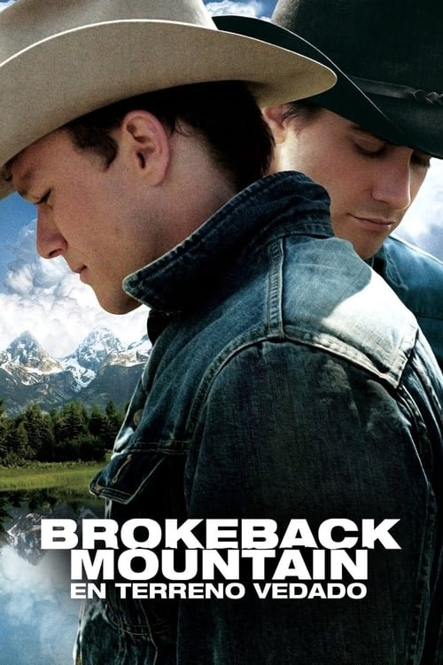

Brokeback Mountain: En terreno vedado (2005)
Sinopsis Rápida
Un romance secreto entre dos vaqueros en el árido paisaje de Wyoming florece a lo largo de décadas, desafiando las convenciones sociales y las propias limitaciones de sus corazones.
Sinopsis Detallada
Brokeback Mountain cuenta la historia de Ennis Del Mar y Jack Twist, dos hombres que inician una apasionada relación amorosa mientras trabajan como vaqueros. Su romance, mantenido en secreto debido a las normas sociales de la época, se extiende a lo largo de años, marcado por encuentros fugaces y la incesante lucha por una vida juntos. La película explora temas de amor reprimido, identidad sexual y el peso de las expectativas sociales en un contexto de paisaje desolador y belleza salvaje, creando una narrativa conmovedora y profundamente humana.
¿Por qué tenés que verla?
- Una historia de amor conmovedora y universal que trasciende las barreras de género y orientación sexual.
- Las actuaciones magistrales de Heath Ledger y Jake Gyllenhaal, que dieron vida a la historia con una fuerza y vulnerabilidad inolvidables.
- Su impacto cultural significativo, abriendo el diálogo sobre la representación LGBTQ+ en Hollywood y normalizando la narrativa del amor entre hombres.
- La impresionante fotografía que captura la belleza y soledad del paisaje, reflejando los sentimientos internos de los personajes.
Idea Extra
Comparación del impacto cultural de Brokeback Mountain con otras películas que exploran temas de amor y represión social en el cine.
{{CONTENIDO_RELACIONADO}}